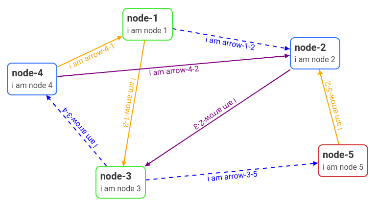
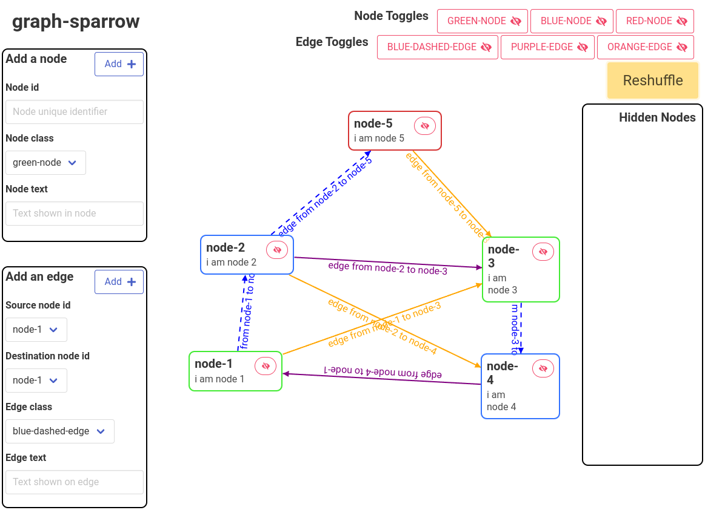

A highly motivated engineer with a strong background in computer science, statistics, artificial intelligence, and telecommunications, and a great experience working with data and machine learning. A team player with good communication skills, and a dedication to staying current with the latest technologies and industry developments.
Various development tasks at the PDU (Product Development Unit).
I developed my Master Thesis titled Knowledge Graphs for IoT Platform Digital Twins for KTH.
Published two conference papers and a research paper in the field of data science and intelligent transportation systems.
Various tasks to gain work experience and improve english skills.
Analyze, design, and control complex technical systems with significant autonomous capabilities.
9/10 and Double Degree program with KTH.
Enables the student to carry out the profession of a Telecommunications Engineer.
8.1/10 and 13 courses passed with honors.
Specialization in Electronic Systems.
Add stylable arrows with text tags connecting HTML elements seamlessly. Handy for visualizing relationships between elements and plotting graphs.
Add stylable arrows with text tags connecting HTML elements seamlessly. Handy for visualizing relationships between elements and plotting graphs.
Interactive graph visualization tool w/ built-in force directed graph layout. Enables hiding / moving nodes and loading new graph layouts.
Introduces a data processing system to analyze headway evolution in public transportation systems, detecting anomalies and assessing service quality for enhanced efficiency and reliability.
This paper analyzes arrival time estimators of urban buses provided by EMT Madrid to enhance the performance and reliability of urban public transportation. Using algorithms, it estimates position, arrival times, running times, and headways between buses, contributing to improved urban mobility and service monitoring.
This study aims to improve public transport journeys by analyzing past bus arrival estimation data. It characterizes bus behavior, estimates real bus pass times, and designs algorithms for efficient estimation using limited arrival time data. The findings can enhance arrival time estimators and optimize public transport efficiency.
I like playing volleyball, padel, and football; and I enjoy regularly going to the gym to seek the best version of myself and relieve daily stress. I also love playing chess and video games.
I have created and participated in several Open Source projects.